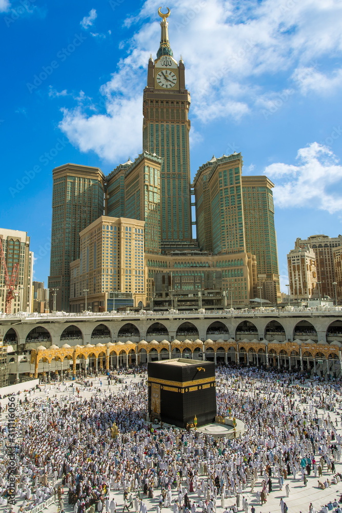
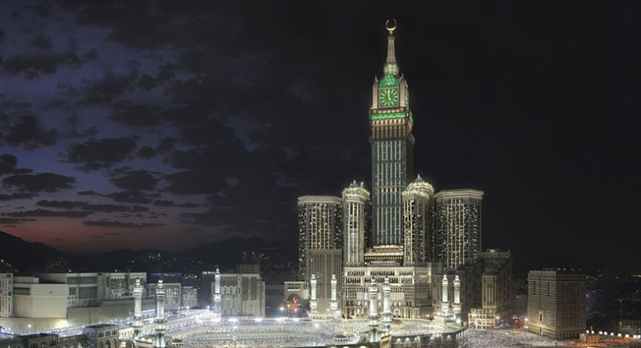

Makkah Royal Clock Tower, znany również jako Abraj Al Bait, znajduje się w Mekce i ma wysokość 601 metrów. W porównaniu do innych wieżowców na tej liście wyróżnia go przede wszystkim gigantyczny zegar. Na wszystkich czterech stronach wieży zamocowane są tarcze zegarowe o średnicy 43 metrów. Zegar na Makkah Royal Clock Tower jest największym zegarem na świecie.
Makkah Royal Clock Tower (Mekka, Arabia Saudyjska) – wysokość: 601 m. Ukończony w 2012 roku, wieża zegarowa jest częścią kompleksu Abraj Al-Bait i znajduje się tuż obok Wielkiego Meczetu w Mekce. Ma 120 pięter. Mieszczą się w nim apartamenty i hotel. Na szczycie wieżowca zamontowano niedawno zegar, który stanowi największy tego typu obiekt na świecie. Zegar niemieckiej produkcji ma 43 metry wysokości i 45 metrów szerokości. Znajduje się z każdej z czterech stron budynku. Zegar jest widoczny z odległości 17 kilometrów w nocy oraz 12 kilometrów w dzień. Budynek jest nie tylko ważnym punktem orientacyjnym w Mekce, ale również ważnym miejscem zakwaterowania dla pielgrzymów przybywających do Wielkiego Meczetu. Makkah Royal Clock Tower jest częścią większego kompleksu Abraj Al-Bait, który obejmuje kilka wież, centrum handlowe, luksusowy hotel oraz muzeum. Zaplanujcie wakacje w Arabii Saudyjskiej i zobaczcie majestatyczne budowle.
 Abraj Al Bait (w wolnym tłumaczeniu Wieże Domu) powstał, aby usprawnić obsługę pielgrzymów, tak licznie przybywających do Mekki. Kompleks finansowany był przez władze Arabii Saudyjskiej. Budowa wywołała wiele kontrowersji. Aby Abraj Al Bait mógł powstać, konieczne było wyburzenie XVIII-wiecznej, otomańskiej twierdzy na szczycie wzgórza wzgórza z widokiem na Wielki Meczet. Wybudowany kompleks (z luksusowymi hotelami, apartamentami i centrum handlowym) to drugi najdroższy obiekt na świecie - całkowity koszt budowy wyniósł 15 miliardów dolarów. Królewska Wieża Zegarowa będzie się składać z betonowej struktury o wysokości 662 metrów oraz metalowej iglicy o wysokości 155 metrów. Te dwa elementy razem będą jedynie o 11 metrów niższe niż Burj Khalifa w Dubaju. Gigantomiania arabskich szejków nie zna granic. Na szczycie wieżowca zamontowano niedawno zegar, który stanowi największy tego typu obiekt na świecie. Twórcy kompleksu stawiają sobie za cel zastąpienie powszechnie obowiązującego GMT (Greenwich Mean Time) przez Mecca Time, który od 11 sierpnia odmierza megakonstrukcja. Zegar niemieckiej produkcji ma 43 metry wysokości i 45 metrów szerokości. Znajduje się z każdej z czterech stron budynku. Zegar jest widoczny z odległości 17 kilometrów w nocy oraz 12 kilometrów w dzień. Makkah Clock Royal Tower to także największy hotel świata. Będzie miał 76 pięter, na których znajdzie się 858 luksusowych apartamentów z widokiem na święte miejsce.